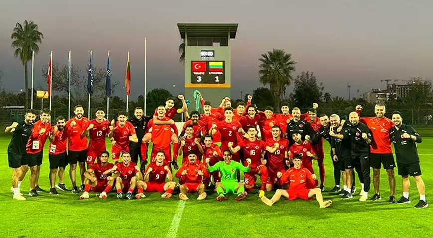

Kıssadan Hisseler
Anasayfa
Bilim
Spor
Teknoloji
Sağlık

U19 Milli Takımı, Litvanya'yı 3 golle devirdi!
Beşiktaş'ta Rıza Çalımbay'dan Burak Yılmaz cevabı! Rachid Ghezzal gerçeğini açıkladı
Real Madrid'in eski fizyoterapisti: Arda Güler köpek balıkları arasında kalacaktı
Fenerbahçe'de şaşırtan ayrılık! Sezon başında transfer edilmişti